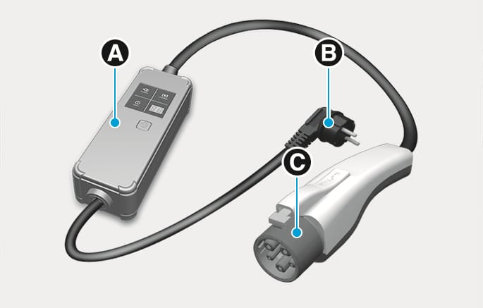

휴대용 충전기(ICCB) 사용하기
공공 충전소까지 이동하기 어려운 경우 별도로 구매한 휴대용 충전기(In-cable control box, ICCB)를 사용해 일반 전원(AC 220 V)으로 차량을 충전할 수 있습니다.
감전 및 화재, 폭발 등으로 인한 부상 및 재산상의 손실을 방지하려면 차량을 충전하기 전에 '전기차 충전 시 안전을 위한 주의사항'을 읽고 지시를 따르십시오.
화재 및 폭발로 인한 부상 및 재산상의 손실을 방지하려면 다음 지시를 따르십시오.
-
현대자동차에서 공급하는 순정 휴대용 충전기만 사용하십시오. (사양 적용 시)
-
휴대용 충전 케이블은 어린이의 손이 닿지 않는 곳에서 사용하십시오. 어린이가 임의로 조작하는 경우 예상치 못한 사고가 발생할 수 있습니다.
-
연장 케이블을 사용하지 마십시오.
-
사용할 전원의 정격 전압, 전류 및 부하를 확인하십시오. 전압, 전류, 또는 부하 조건이 충족되지 않는 경우 차량을 충전할 수 없거나 충전 중 화재 등 안전 사고가 발생할 수 있습니다.
-
가정에서 휴대용 충전기로 차량을 충전하는 중 배전기의 용량이 초과되면 가정에 공급되는 전원이 차단되거나 화재가 발생할 수 있습니다.
-
충전 시 냄새나 연기 등 이상 증상이 발생하는 경우 즉시 충전을 중지하십시오.
-
가정용 전기로 전기차를 충전하는 경우 전기차 요금제가 아닌 가정용 요금제에 따라 전기 요금이 부과됩니다.

2C_ICCBCharger
- 제어 박스
- 전원 플러그
- 충전 커넥터
|
아이콘 |
이름 |
색상 |
설명 |
|
전원(READY) |
녹색 |
전원이 연결되면 켜집니다. |
|
|
충전(CHARGE) |
파란색 |
충전 중 켜지고 충전 전류 제한 시 깜빡입니다(6A로 강제 전환). |
|
|
고장(FAULT) |
빨간색 |
누설 전류, 통신 오류, 또는 과전류 오류가 발생하거나 플러그 및 충전기 내부의 고온 보호 기능이 작동할 때 깜빡입니다. |
|
|
충전 전류(CHARGE LEVEL) |
- |
현재 충전 전류 설정을 표시합니다(6A, 8A, 10A, 또는 12A). |
-
오류가 발생하는 경우 전원 플러그를 분리하고 다시 연결한 후 제어 박스의 버튼을 2초 이상 눌러 휴대용 충전기를 리셋할 수 있습니다.
-
휴대용 충전기를 리셋한 후에도 동일 증상이 반복되면 당사 직영 하이테크센터 및 블루핸즈에 점검을 의뢰하십시오.
-
사용 중 1분 이상 상태 변경이 없는 경우 휴대용 충전기가 절전 모드에 진입하며, 디스플레이 화면의 조명이 꺼집니다.
-
휴대용 충전기의 전원 플러그를 가정용 전기 콘센트에 연결하십시오.
-
제어 박스의 전원 표시등이 녹색으로 켜집니다.
-
-
충전 전류 표시창의 숫자가 깜빡일 때까지 제어 박스의 버튼을 2초 이상 길게 눌러 충전 전류를 설정하십시오.
공급 전원의 정격 전류에 적합한 충전 전류의 설정 예는 다음과 같습니다. 단, 적절한 충전 전류는 건물 내부의 전력 사용량 등 주위 환경에 따라 달라질 수 있습니다.
전원 정격 전류
충전 전류
14-16 A
12 A
12-13 A
10 A
10-11 A
8 A
8-9 A
6 A
-
버튼을 누를 때마다 '6 A – 8 A – 10 A – 12 A' 순서로 충전 전류가 변경됩니다.
-
버튼 입력 없이 10초가 지나면 깜빡임이 멈추며 충전 전류 설정이 완료됩니다.
-
-
브레이크 페달을 밟은 상태로 주차 브레이크를 체결하십시오.
-
각종 전원 스위치를 끄고, 변속 다이얼의 P 버튼을 눌러 'P'(주차)로 변속한 후 시동을 끄십시오.
-
차량 도어의 잠금이 해제된 상태에서 충전 도어의 열림 표시부를 눌러 충전 도어를 여십시오.
-
충전 인렛 커버를 열고 충전 커넥터와 충전 인렛에 먼지 등 이물질이 있는지 확인하십시오.
-
이물질이 있는 경우 에어건을 사용해 제거하십시오.
-
충전 케이블의 충전 커넥터나 차량의 충전 인렛을 손으로 만지지 마십시오.
-
ICCB 충전 플러그를 콘센트에 연결할 때 접지가 되어있는 콘센트에 연결하여 사용하십시오. 콘센트에 접지 단자가 없을 경우 전문 기술자에게 요청해 접지를 설치한 후 사용하십시오.
-
-
휴대용 충전 케이블의 충전 커넥터 보호 캡을 분리한 다음 충전 커넥터 손잡이를 잡고 차량의 완속 충전 인렛에 연결한 후 '찰칵' 소리가 날 때까지 미십시오.
-
충전이 시작되면 클러스터에 충전 예상 소요 시간이 1분 동안 표시됩니다.
-
충전 중 차량 도어를 열면 충전 예상 소요 시간이 1분 동안 다시 표시됩니다.
-
예약 충전 설정 중인 경우, 예약 충전 메시지가 표시됩니다.
-
예약 충전 대기 중 예약 공조 작동 시 충전 예상 소요 시간이 '–'로 표시됩니다.
-
-
충전이 완료되면 충전 커넥터 손잡이 부분을 잡고 잠금 해제 버튼을 누른 상태에서 충전 커넥터를 당겨 충전 인렛에서 분리하십시오.
-
충전 커넥터 잠금 모드를 상시 잠금 또는 충전 중 잠금으로 설정한 경우, 도어 잠금을 해제한 후 충전 커넥터를 충전 인렛에서 분리하십시오.
-
자세한 설명은 '충전 커넥터 잠금 모드 설정하기'를 참고하십시오.
-
-
충전 중에는 지역에 따라 라디오 청취가 원활하지 않을 수 있습니다.
-
-
충전 인렛 커버를 닫고 충전 도어를 눌러 완전히 닫으십시오.